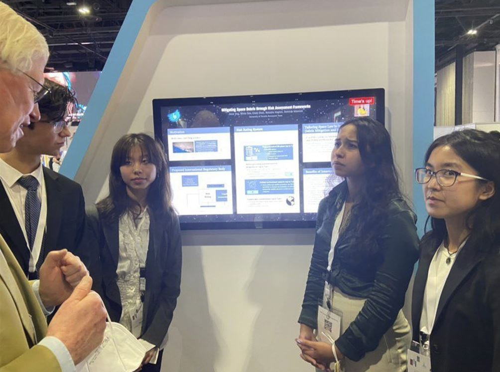
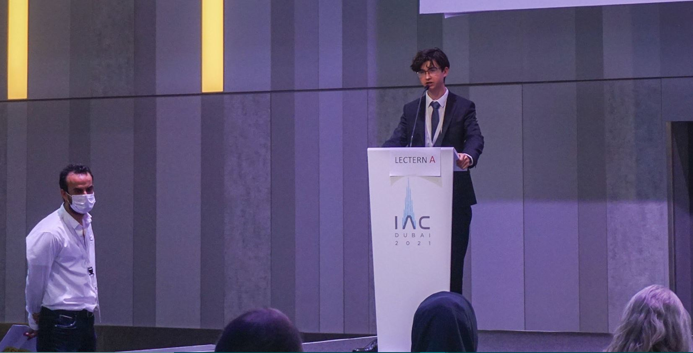
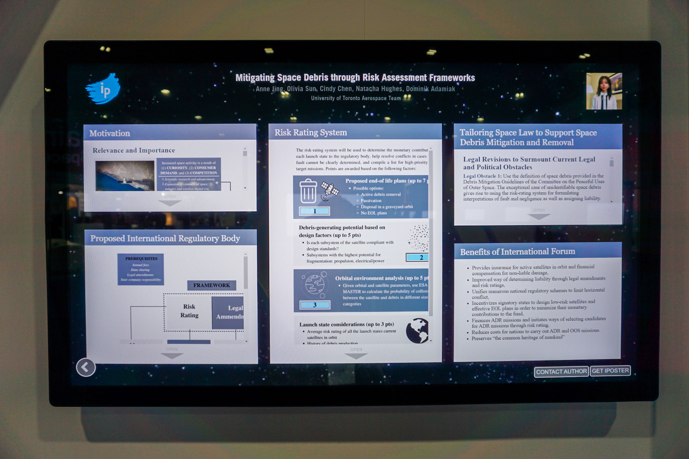
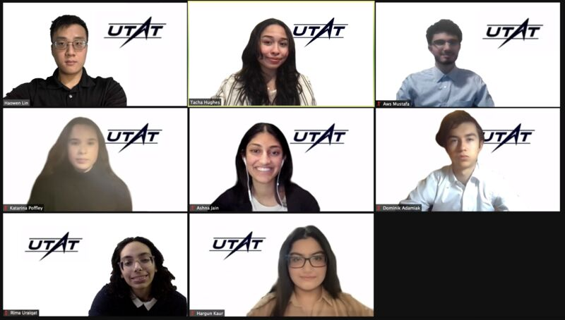
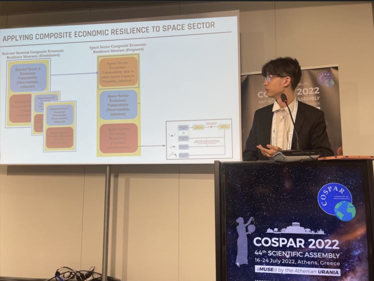
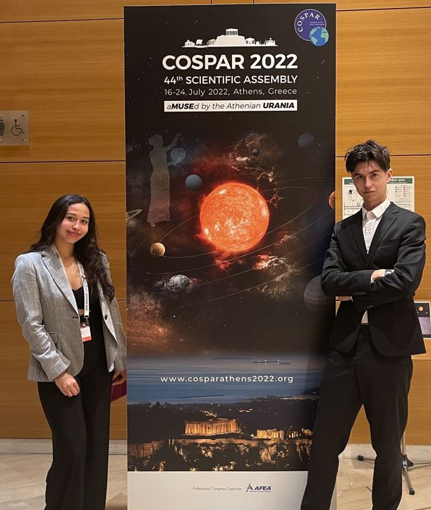
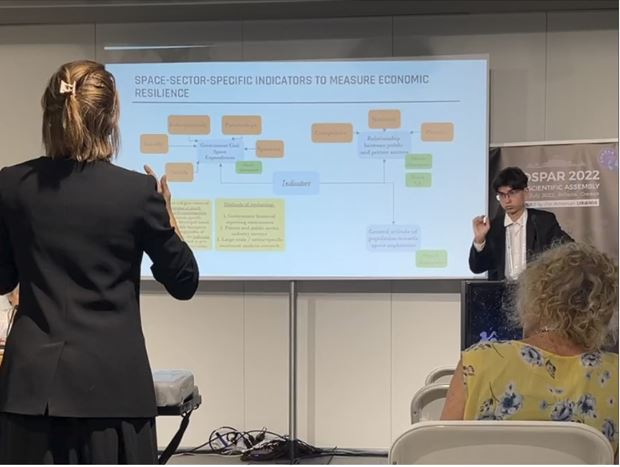

Mitigating Space Debris Through Risk Assessment Frameworks
Conference Paper + Interactive/Oral Presentation @ IAC 2021 Dubai
Shortlisted as top 5 interactive presentations in our category (only UG team to be shortlisted)
 

Mitigating Space Debris Through Risk Assessment Frameworks
Conference Paper + Interactive/Oral Presentation @ IAC 2021 Dubai
Shortlisted as top 5 interactive presentations in our category (only UG team to be shortlisted)
Extrapolation of Conflict Mitigation Strategies from Teams in Isolated Communities on Earth to Long Duration Space Exploration Missions
Conference Paper + Online Presentation @ AIAA 2022 San Diego

Economic Reslience In National Space Industries
Oral Presentation @ COSPAR 2022 Athens (conference paper pending)
  